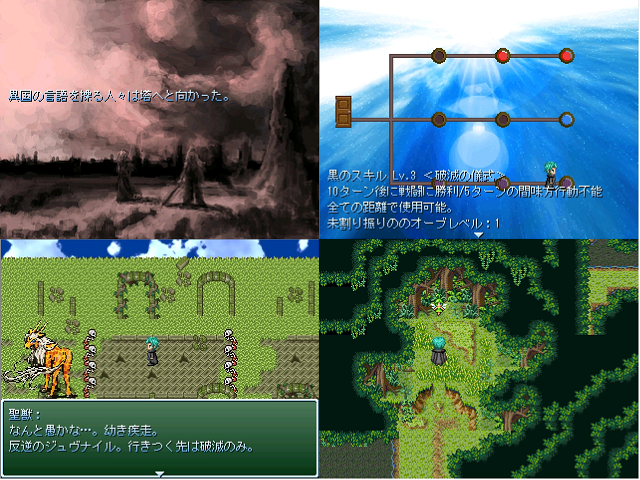

最高にCOOLな作者コメント：
＜戦闘＞
距離の概念のあるデフォ戦と、癖のあるスキルライン。
安定した物理火力と防御力を持つ赤の力、
距離の制限が気になるが範囲・超火力魔術の青、
トリッキーでスーサイドな黒、の3つのスキルラインにポイントを割り振ってスキルを習得。
赤に青をタッチしたハイブリッドな魔法戦士型や3色コントロールも可能。
＜ストーリー＞
放棄された聖域からオーブを盗み出したヨハンは、
その力を私情のために使い復讐を遂げようと試みる。
対象はある象徴。その滑稽さを自ら悟りながらもその靴音は止まらなかった。
そして、止まない雨と蔓延する病。
今度は露骨過ぎず、意味不明過ぎないように気を付けました。
8/12現在、完成度が7割程度なので遅刻します。
祭りへの参加は二回目！！
荒削りでごめーーーーーーーーーーん
管理人コメント：
良いマップ組みだ…。能力振り分け画面はやはりワクワクしますね！
↓この作品の感想を書く